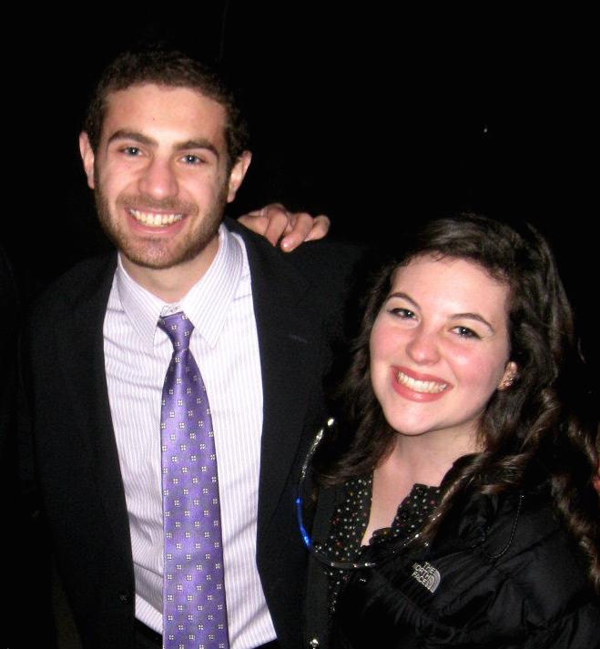
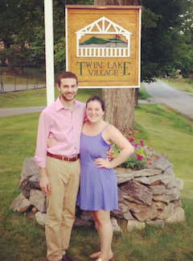
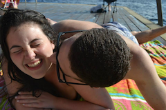

January 2011
Our first picture together
Sophie and Alex met at Northwestern University in 2010. We aren't exactly sure how or when we were introduced to each other, but our best guess is that Andrew Brugman played a role in it. The real magic started during the summer of 2012 when we both worked at the Northwestern Office of Undergraduate Admission. We would give information sessions together, get lunch together, hang out after work. Then on August 10, 2012 we figured out that we both kinda liked each other.

August 10, 2012
The night it all began
On our first date we made bagels, from scratch! Alex's idea...Our first dinner date was at a Sushi restaurant in Evanston. We like food, in case you were curious. We spent our last year at Northwestern as that inseparable couple. After we graduated, Sophie went to work for Gamma Phi Beta as a Collegiate Leadership Consultant and Alex went to work for a startup software company in Santa Barbara, California. They knew the distance would be tough, but Sophie's job was only a year long and we had an end date in sight.
After a long year where Sophie traveled to more than 26 colleges & universities, and Alex drove to LA so many times...filled with the happiest hello's (the first time seeing each other after a month apart) and the saddest goodbyes (on a train station platform)...Sophie made the big decision to move out to California and live with Alex.
Now we are getting married and we can't wait to celebrate with you!

July 2013
Before dinner at TLV
When Alex proposed in July 2015 at Twin Lake Village (TLV) in New London, NH, we knew that this cozy little resort would be the perfect wedding venue. On August 28, 2016, we will be married on the exact spot that Alex proposed!
Twin Lake Village has been a special place for Sophie since she spent her first summer there when she was just a year old. The resort is situated on 200 acres of hillside woods on the shore of Little Lake Sunapee and is still owned and run by the wonderful Kidder family, who have been welcoming guests for 118 years and have helped us to plan an amazing weekend! We love the quaint hotel overlooking the 9-hole golf course and the cozy little cottages located around the sprawling property. There is something truly special about TLV that has brought our family back year after year for the perfect summer family vacation.

July 2013?
At the TLV dock
When you’re not celebrating with us over food and drinks, we hope you’ll enjoy spending time on the lake swimming and boating, playing golf with our friends and family, taking a nature walk in the beautiful wooded area behind the hotel, or reading a book in the colorful rocking chairs on the hotel porch.
We hope you will enjoy a fun and relaxing getaway in New England with us for our wedding weekend!
New London, NH is located one hour from the Manchester-Boston Regional Airport and about an hour and a half from Boston Logan International Airport. For guests who will be flying to join us for our wedding weekend, we recommend booking your trip through Boston Logan and either renting a car or reserving a space on the Dartmouth Coach bus. The Dartmouth Coach provides luxury service directly from Logan Airport to downtown New London every two hours. For more information, please visit their website.
Check in at Twin Lake Village is available at 3pm on Saturday, August 27th. Dinner will be provided for all our guests at TLV at 6pm on Saturday.
We have reserved the property at Twin Lake Village from Saturday (August 27th) afternoon through Monday (August 29th) morning. There is a special rate of $100 per night ($85 for children 2 - 5) per guest for our wedding weekend at TLV. This rate includes access to the facilities (golf, boating equipment, use of the lake, tennis courts, shuffleboard, etc), as well as breakfast on Sunday and Monday morning.
Twin Lake Village only accepts checks (no credit cards) so we have setup an online payment method for your convenience using Stripe. If you would prefer to pay by check, please call TLV (603-526-6460) to book your stay, otherwise we will consider the payment below your reservation.
After you have made your reservation above, Sophie and Alex will be working to accommodate all guests in hotel rooms or cottages on the property. If you would prefer to stay elsewhere during the weekend in New London, please contact us directly (alexandsophiewedding2016@gmail.com) and we will give you some ideas for alternative accommodations.
Twin Lake Village is a special place. One of our favorite things about staying here is being removed from the stresses of our every day lives! TLV is a cozy but rustic place. All cottages have fully functioning kitchens and lots of room for guests to spread out. However, there are no TVs in the cottages or hotel rooms (not that it matters because you’ll be busy doing activities and spending time with us anyway!). WiFi is available, but only in the hotel lobby. Cell service is very reliable, so you won’t need to worry about not being able to document the whole weekend on Facebook and Instagram ;)
Because our wedding weekend will be a bit different from other weddings we have attended, we wanted to provide you with a short suggested packing list to make sure you’re prepared!
Clothing:
- Semi-formal attire for the ceremony and reception; please keep in mind that we will be outside for both events (the reception will take place in a tent on the property)
- Bowties are encouraged for men :)
- Ladies might want a sweater or wrap for cool evening weather on our wedding night
- Casual wear/activewear for golf, tennis and exploring (there is no dress code for the golf course, but bring golf cleats if you have them)
- Smooth soled shoes or sneakers for tennis courts
- Swimsuit!
- Long pants or jeans and a sweatshirt for cool evenings
- Dancing shoes!
Extras:
- Sunblock and bug spray…we’ll bring extra in case you forget
- Snacks or beverages of your choosing…we will provide some for you upon arrival though!
- Sand castle building supplies
- Beach towel
- A good book to read on the porch in your rocking chair or down by the lake
These items are provided:
- Life jackets
- Canoes, kayaks and rowboats with paddles
- Fun floaties
- Beach chairs
- Golf pull carts
- Shuffleboard equipment
New London, NH is the cutest, most picturesque New England town! After spending 24 summers here, we decided to make a list of some places you might need to visit before, during, or after our wedding weekend:
Hannaford Grocery Store - We promise there will be lots of food and beverage provided during the weekend, but if you think you’ll want to stock up on your favorite beer or snacks, feel free to stop on by the local grocery store before you arrive and settle in!
New London Playhouse - This cute little theater is known for their traditional summer stock performances each year. The theater is actually located inside of an old barn! Lucky for you, they finally got air conditioning a few years ago. Don’t forget to rent a 5 cent pillow to sit on during the performance!
Crescenti’s Bog - Please make sure to ask Lily (maid of honor) how much she loves this bog (she had a memorable experience loosing a Disney Princess light up sneaker here one summer). But in all seriousness…it’s a pretty cool place to take a walk. Don’t step off the wooden planks though, or you might get sucked in!
Food:
- New London Inn Restaurant - We recommend the truffle fries!
- Arctic Dreams - Awesome, locally made ice cream…if you can catch them when they’re open.
- Dunkin’ Donuts - Need we say more? Welcome to New England! (Also…this just happens to be the cleanest DD location Sophie has ever visited).